Supported deployment
Cloudflare Worker
Vite web build, API routing, trusted identity boundary, and delivery orchestration.
Open-source conference program operations
ProgramKit now proves the complete conference-program spine in one fast Cloudflare application. This report compares the working product with the supplied Sessionboard brief, records what was exercised, and names the production work that remains.
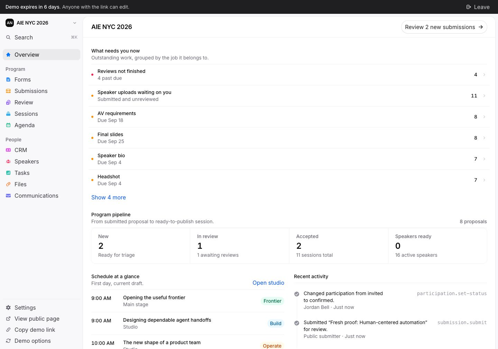
Current verdict
The six firm workflow areas exist as connected product surfaces, not isolated mockups. The system still needs real files, delivery providers, authentication, richer schedule tooling, and the optional integrations before a live pilot should handle real data.
One golden path
Durable Object SQLite is the right primary database for this workload: each event gets one transactional coordination boundary plus alarms and WebSocket support. D1 can later serve cross-event search or analytics without becoming a second write authority.
Supported deployment
Vite web build, API routing, trusted identity boundary, and delivery orchestration.
Authoritative state
Atomic event operations, immutable releases, audit events, alarms, and live updates.
Private files
Direct upload and authorized download.
Optional team view
Async export plus conflict-aware inbound proposals.
Async work
Email, calendar invites, webhooks, and mirror retries.
How two-way Airtable should work
Each row carries a stable ProgramKit ID, source revision, and a saved last-synced baseline. An editable Airtable-only change becomes a validated proposal. A ProgramKit-only change is exported. A field changed differently on both sides becomes a conflict for a human to resolve.
Commit locally. Save the domain operation and outbox intent atomically.
Mirror later. Batch upsert outside the user request with retries.
Compare three copies. Baseline, ProgramKit, and Airtable.
Protect risky fields. Identity, decisions, status, and publication never accept silent inbound edits.
Review conflicts. Keep both candidate values and require an explicit choice.
Brief coverage
“Working” means the local product flow was exercised through the browser. “Partial” means the domain or UI spine exists but a production dependency or requested depth is missing.
| Requested area | Status | Evidence today | Still needed |
|---|---|---|---|
| Event setup | Working | Identity, venue, dates, timezone, status, version checks, schedule boundaries | Admin membership, public theme controls, multi-event switching |
| Custom CFP forms | Working | Ordered questions, mappings, conditions, preview, public link, validation | Category routing, file policy, version comparison |
| Speaker portal | Partial | Scoped profile, confirmation, due tasks, organizer review states | Real headshot/slides uploads, richer task forms, resource pages |
| Communications | Partial | Audience preview, approval, frozen recipients, idempotent demo transition | Email provider, calendar files, reminders, delivery history and failures |
| Evaluation and scoring | Working | Teams, assignments, blind projection, scorecards, decisions, atomic conversion | Assignment UI, conflicts of interest, deeper multi-round policy, AI assist |
| Scheduling | Partial | Drag-and-drop, precise move form, conflict previews, room/list views, immutable publish | Unscheduled tray, undo, day/track filters and fuller publish preflight |
| Readiness dashboard | Working | Live blockers, progress, due dates, submitted-item review, deep links | Saved filters, bulk actions, fuller explanations and history |
| Accelevents | Not built | Stable export and API are suitable foundations | Native one-way adapter, mapping, cursor, retries, operator status |
| Portal resources and embeds | Not built | Public agenda route and published read model exist | Wiki/resources, HTML embeds, speaker gallery, itinerary widget |
| Cloudflare deployment | Working | Vite, Worker, Static Assets, local workerd, SQLite Durable Object | Real auth, R2, delivery outbox, backups, observability |
| Airtable bonus | Designed | Field policy, three-way reconciliation primitive, tests, UI concept | Base template, credentials, webhook/poll worker, conflict queue |
Side-by-side evidence
Sessionboard images are cropped from the competition brief supplied for this review. They are reference evidence, not a visual-fidelity target.
ProgramKit keeps content, questions, data mappings, conditional logic, publish readiness, and preview in one focused editor. The live test revealed the workshop plan only after selecting the workshop format, then accepted a complete proposal.
Open ProgramKit form builder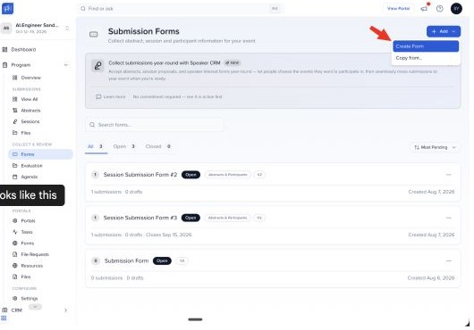
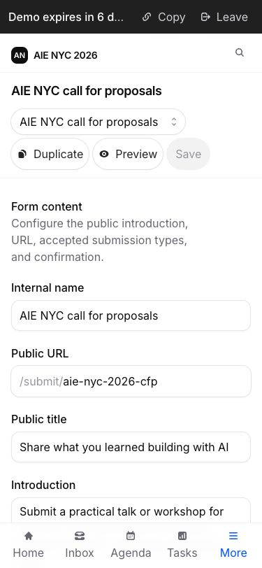
The public route renders only the open form projection. A test workshop submission was validated, stored, assigned to reviewers, and shown in the operator queue.
Open public CFP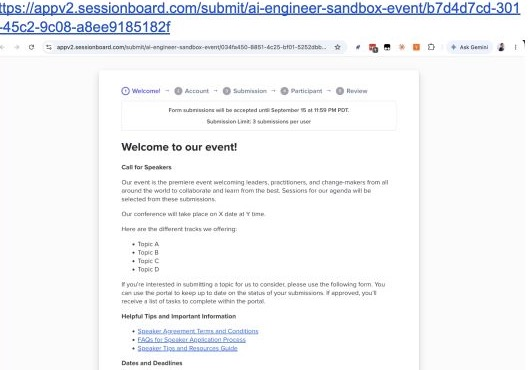
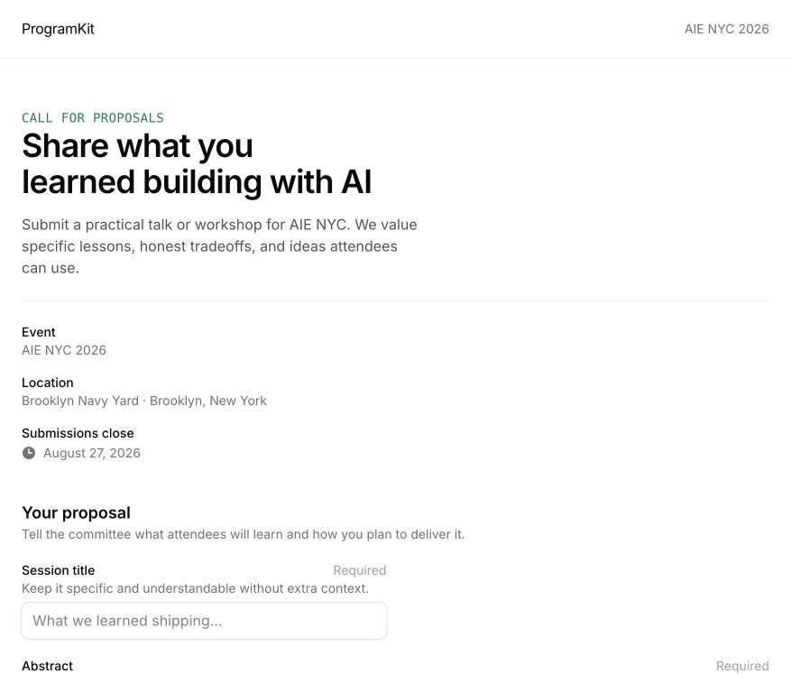
Two reviewer identities completed independent scorecards. The organizer saw the aggregate and feedback, accepted the proposal, and ProgramKit created its person, participation, requirements, and session in one operation.
Open submission pipeline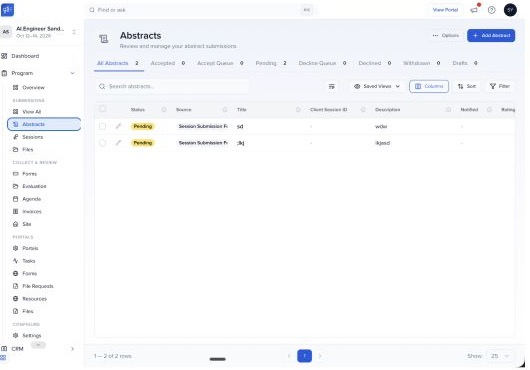
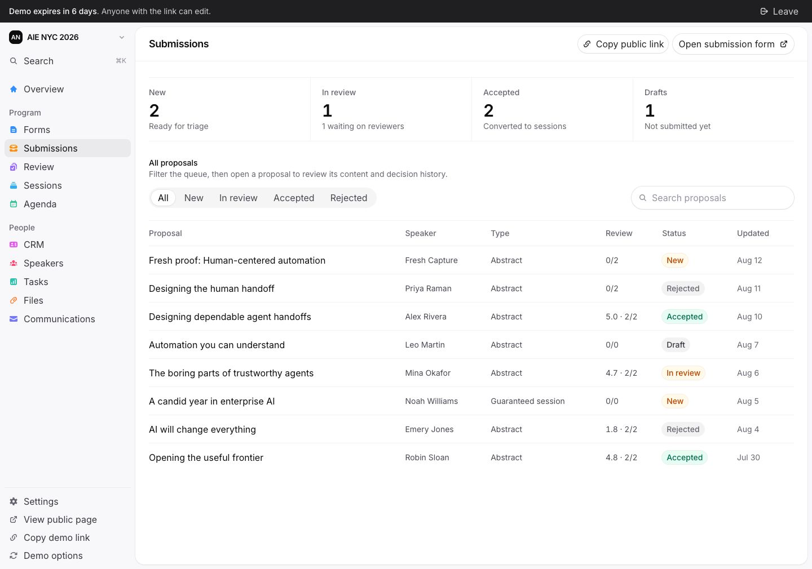
The portal is correctly scoped and supports confirmation, public profile editing, requirement submission, and progress. R2-backed uploads and resource/wiki content are the main missing pieces.
Open speaker portal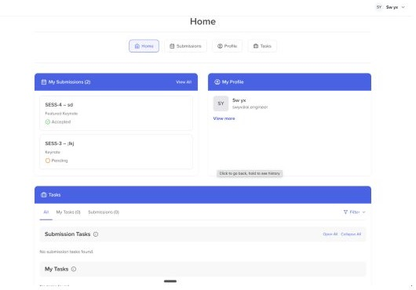
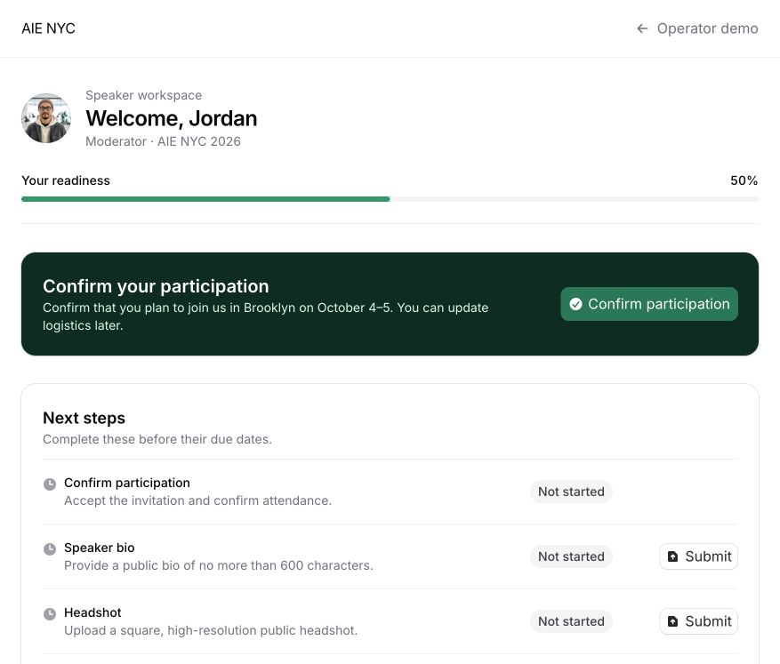
Organizer readiness aggregates participant requirements into progress, hard blockers, review queues, and searchable status views. The participant portal writes back to the same source state.
Open readiness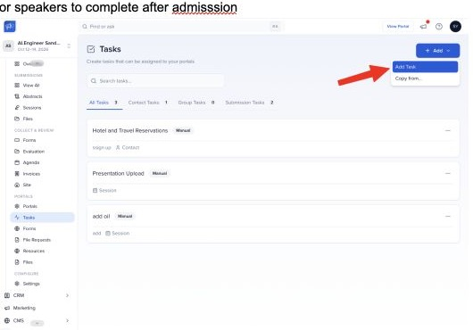
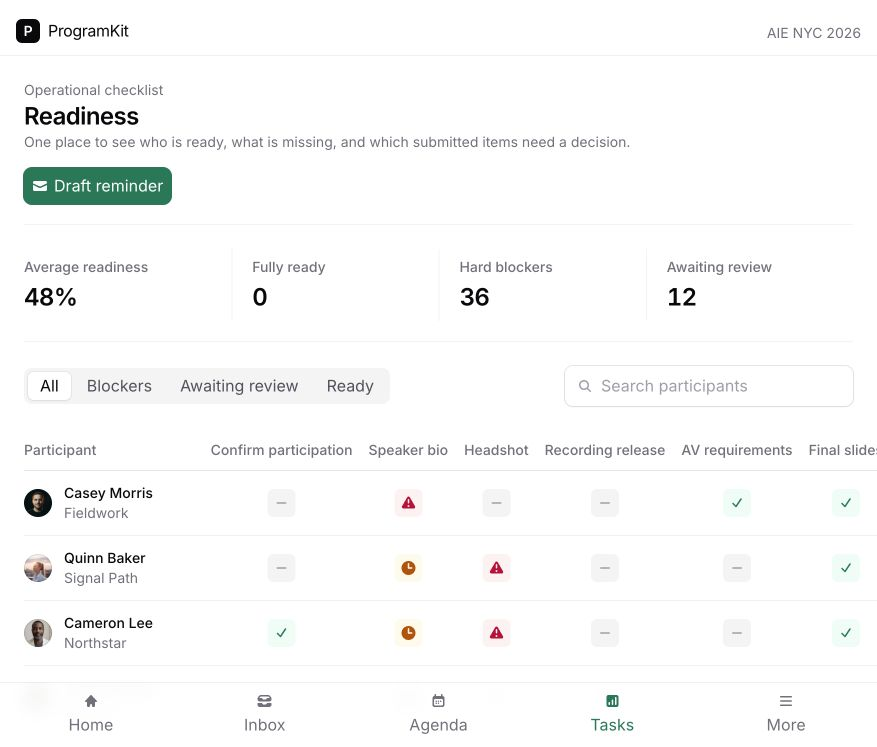
A conflicting room move was accepted into the draft and immediately blocked publication with a plain-language explanation. After resolution, publishing created a new immutable release. Drag and drop and alternate views remain to build.
Open schedule studio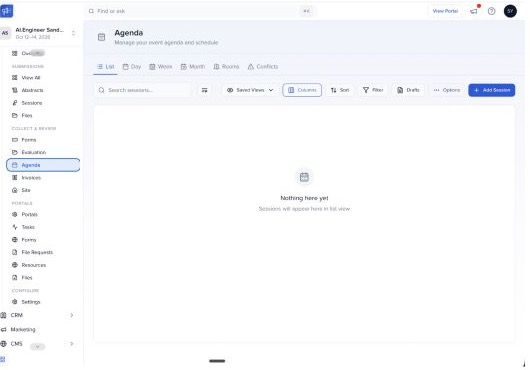
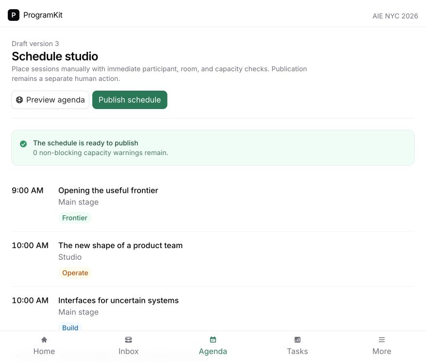
The domain seed proves event configuration and the public agenda route proves a publishable read model, but the brief’s admin settings screen, portal resources, HTML embeds, speaker gallery, and itinerary widget do not yet exist as product flows.
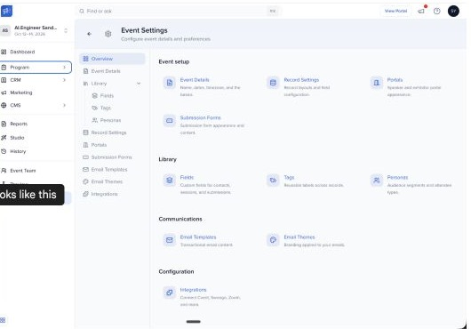
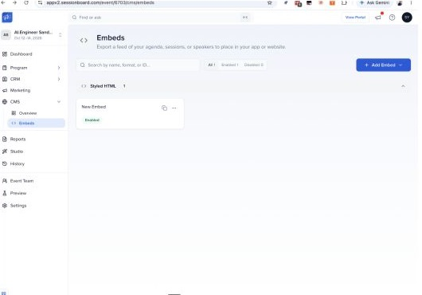
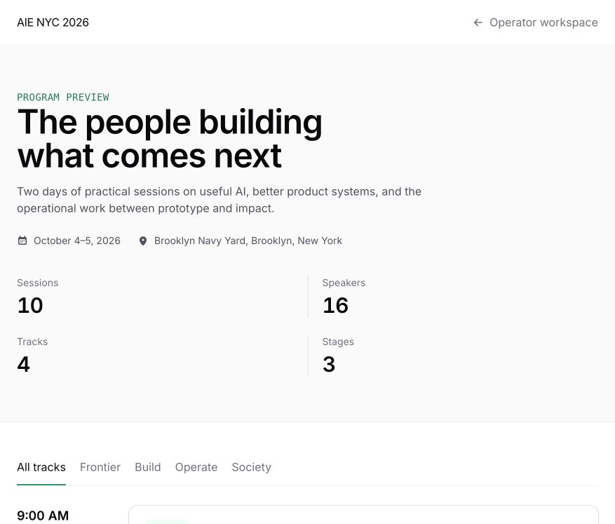
Real-world browser pass
The deterministic demo was restored after these local tests.